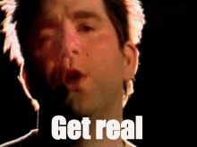

Hi, My name is Marvin (or MAR), I go to Hunter College, and currently majoring in Computer Science, surprisingly however... this is my first attempt at making a full website! Hopefully you like what you see!
My current favorite music artists are My Chemical Romance, Joost, and LCD Soundsystem! However, I'm into all forms of music, generally in the Rock, Emo, and Electronic genre!



When capturing these kind of photos, I always try to go for a nostalgic feeling, capturing a feeling that you may have been here before, even though you may (or may not) had at all. I also try to see the creativeness in it all, with all the vibrance and color you'll see within each shot. This is mainly show to my passion within Media Design, and further enhance my skills to hopefully do more in the future, and gain more inspiration on the way. Most of my influences come from 2000s-2010s media, and how nostalgic it represents to me and to a lot of people. This is a way to show off my capabilites and skills, as well as show off my creativity for people to see.
This link is reading reflections for this class :O